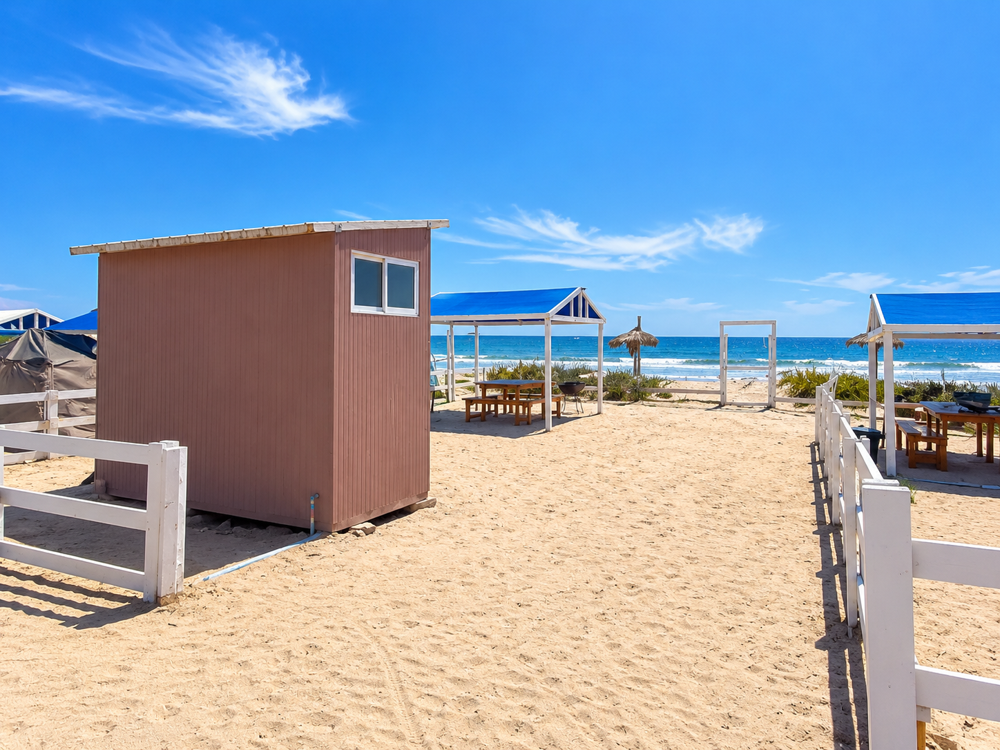
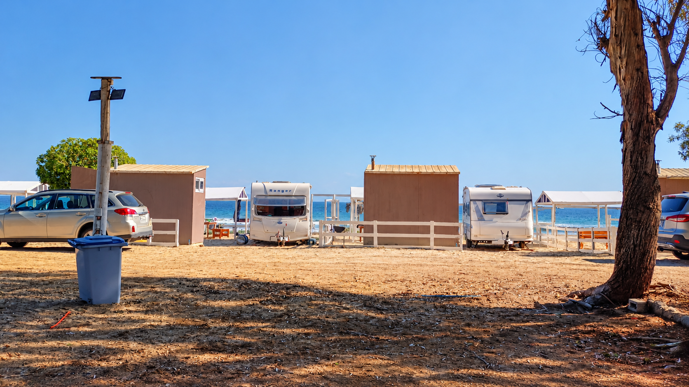
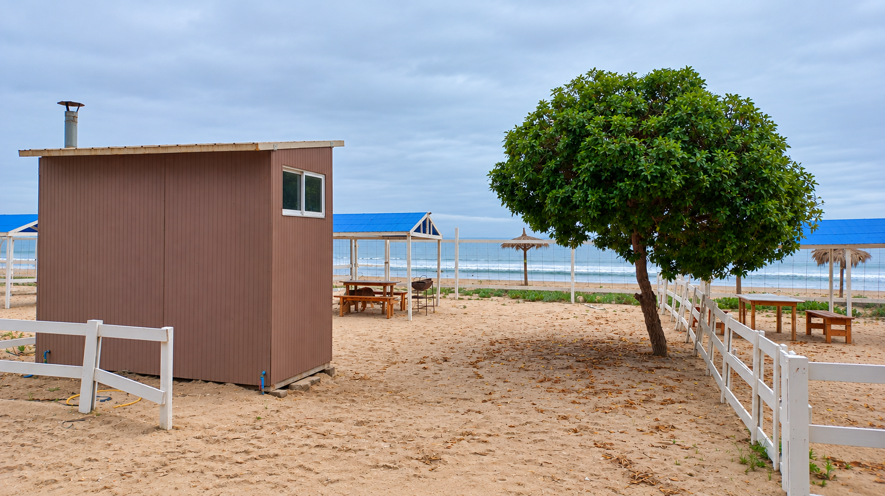

Sitio con baño privado
Disfruta de la tranquilidad de acampar frente al mar con mayor privacidad y comodidad.
Consultar disponibilidad


TU ESTADÍA
Todo lo que necesitas para disfrutar
Nuestros sitios con baño privado están ubicados en primera línea, cerca del mar, y cuentan con espacios equipados para disfrutar en familia.
¿Qué incluye tu sitio?
Baño privado
Agua caliente
Pérgola cubierta
Iluminación
Electricidad básica
Mesa para comer
Mesa para cocinilla
Parrilla
Basurero
Hasta 6 personas por sitio
Capacidad por sitio
Cada sitio de camping está considerado para un máximo de 6 personas. En caso de grupos de más de 6 personas, podrán aplicarse cargos adicionales. Consulta las condiciones directamente con Camping Tongoy antes de realizar tu reserva.
Horarios de tu estadía
CHECK-IN
13:00 hrs
CHECK-OUT
12:00 hrs
Horario de atención: 09:00 a 20:00 hrs.
Información importante
- Cada sitio está considerado para hasta 6 personas.
- Para grupos de más de 6 personas, podrán aplicarse cargos adicionales. Consulta las condiciones antes de reservar.
- El sitio cuenta con electricidad básica.
- No se permiten hervidores ni electrodomésticos de alto consumo.
- Se permiten secadores de pelo pequeños de viaje.
- Los huéspedes deben traer mesas adicionales si las necesitan.
- Las tarifas y la disponibilidad se confirman directamente con Camping Tongoy.